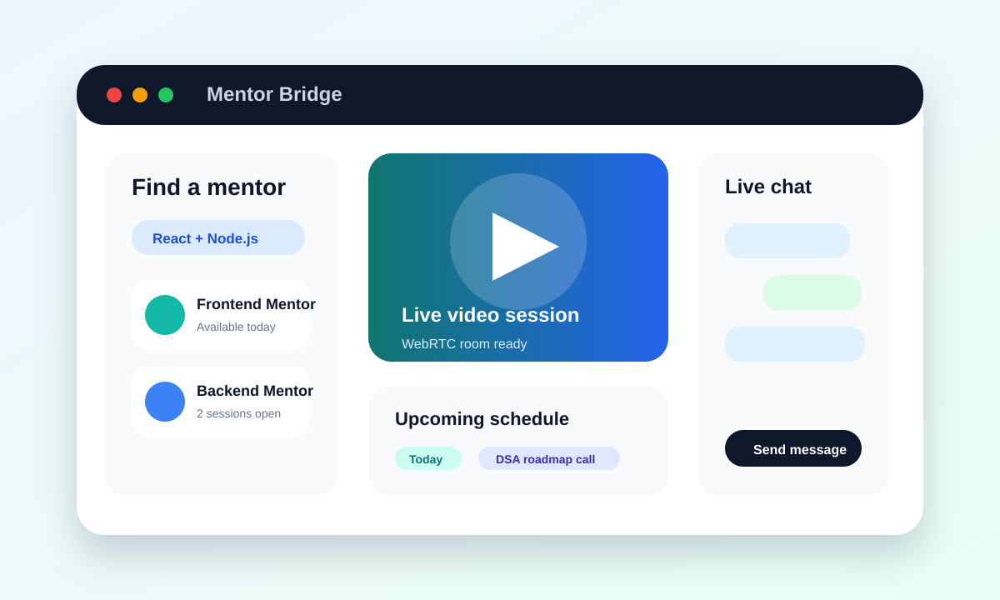

Project Summary
Mentor Bridge is a full-stack MERN application designed to connect mentors and mentees in real time. It includes instant messaging, video calls, and robust user authentication.
A real-time mentorship platform connecting learners and mentors with live chat, video calling, and secure authentication.

Mentor Bridge is a full-stack MERN application designed to connect mentors and mentees in real time. It includes instant messaging, video calls, and robust user authentication.
GitHub: github.com/AshishBiswas1/Mentor-Bridge-Frontend
Live demo: mentor-bridge-frontend.vercel.app